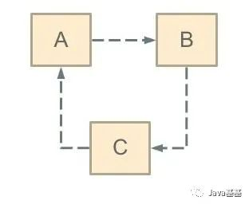
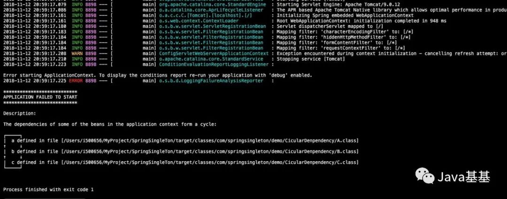
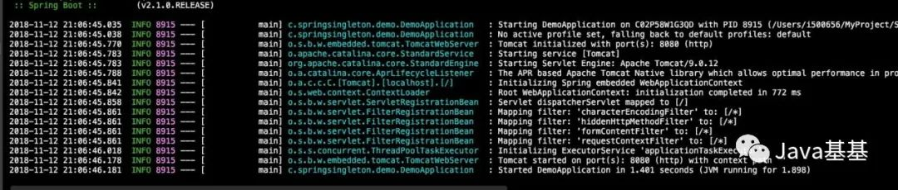
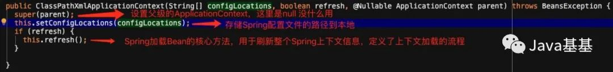
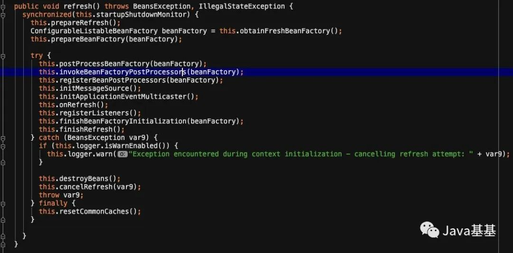
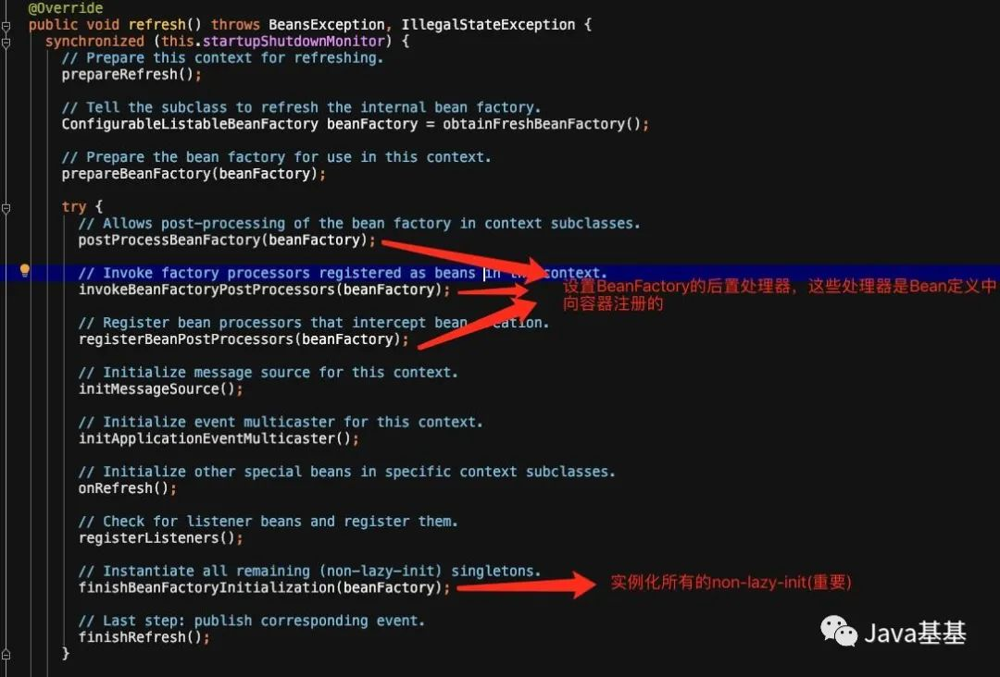
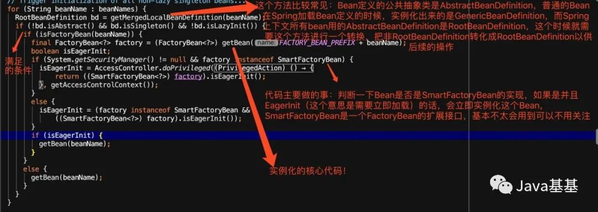
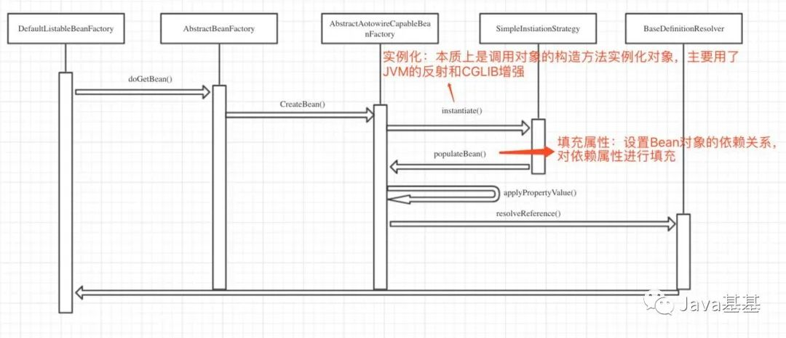
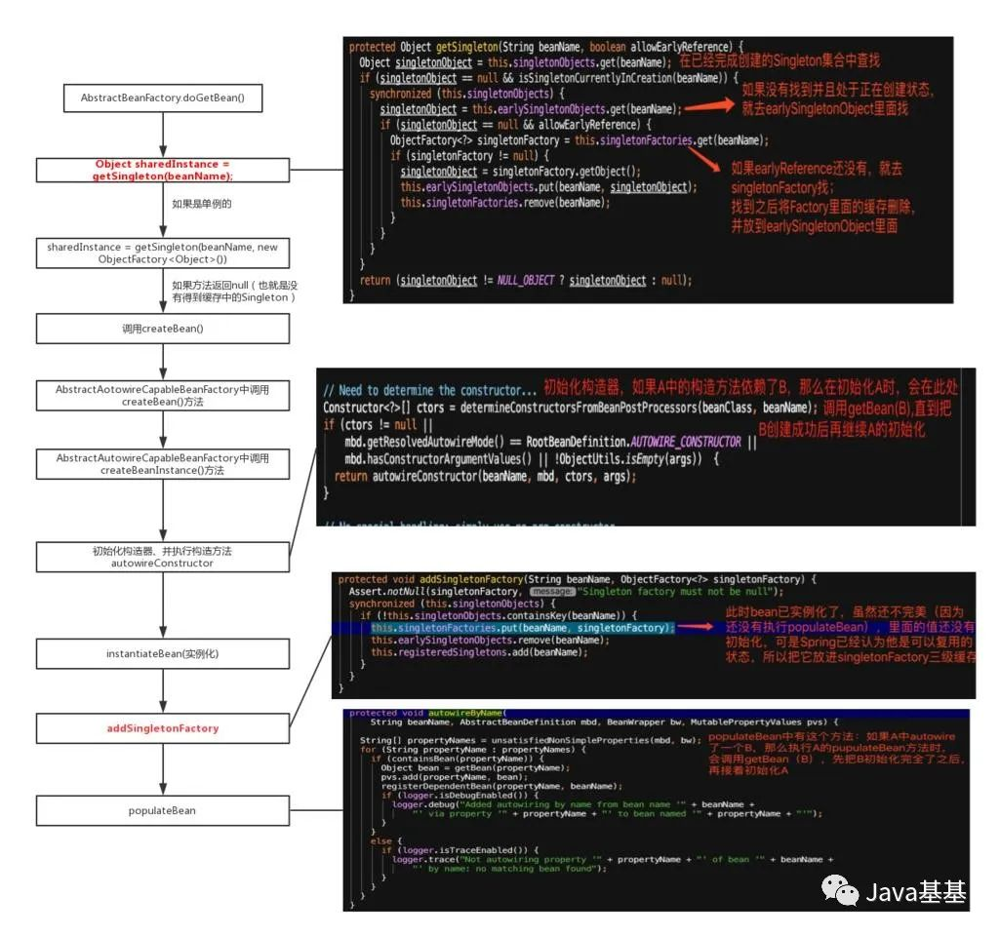
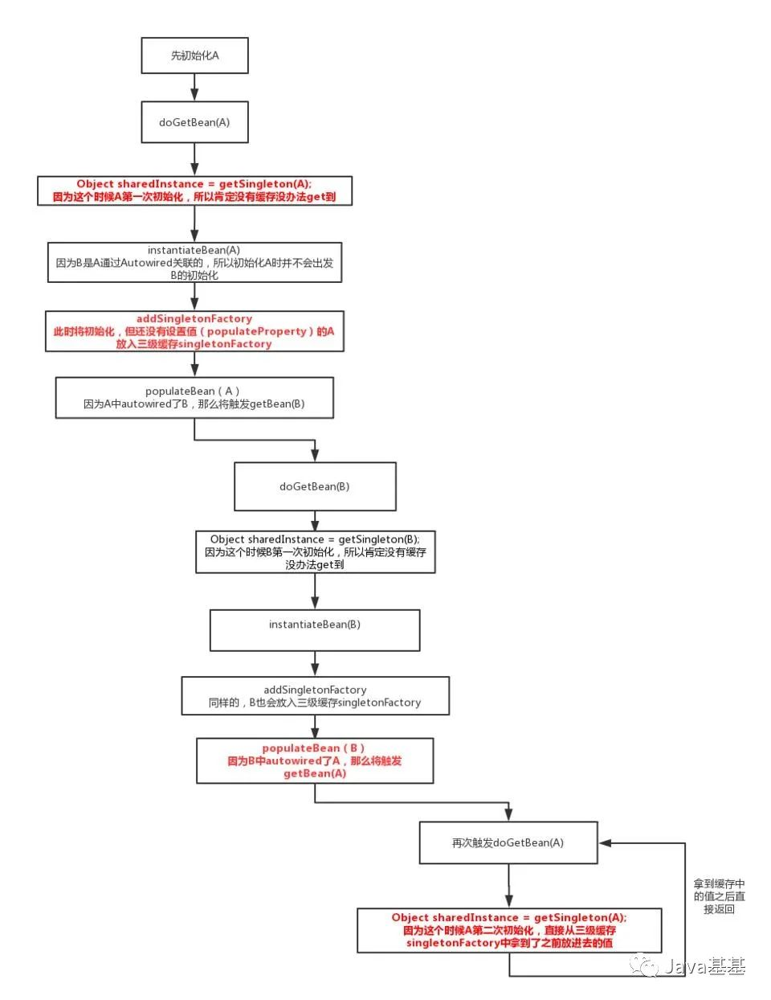

从源码角度分析IOC循环依赖的问题。
先看一个循环依赖问题
现象
循环依赖其实就是循环引用，也就是两个或则两个以上的bean互相持有对方，最终形成闭环。比如A依赖于B，B依赖于C，C又依赖于A。如下图：

如何理解“依赖”呢，在Spring中有：
- 构造器循环依赖
- field属性注入循环依赖
直接上代码：
1. 构造器循环依赖
@Service
public class A {
public A(B b) { }
}
@Service
public class B {
public B(C c) {
}
}
@Service
public class C {
public C(A a) { }
}
结果：项目启动失败，发现了一个cycle。

2. field属性注入循环依赖
@Service
public class A1 {
@Autowired
private B1 b1;
}
@Service
public class B1 {
@Autowired
public C1 c1;
}
@Service
public class C1 {
@Autowired public A1 a1;
}
结果：项目启动成功

3. field属性注入循环依赖（prototype）
@Service
@Scope("prototype")
public class A1 {
@Autowired
private B1 b1;
}
@Service
@Scope("prototype")
public class B1 {
@Autowired
public C1 c1;
}
@Service
@Scope("prototype")
public class C1 {
@Autowired public A1 a1;
}
结果：项目启动失败，发现了一个cycle。
现象总结：同样对于循环依赖的场景，构造器注入和prototype类型的属性注入都会初始化Bean失败。因为@Service默认是单例的，所以单例的属性注入是可以成功的。
分析原因
分析原因也就是在发现SpringIOC的过程，如果对源码不感兴趣可以关注每段源码分析之后的总结和循环依赖问题的分析即可。
SpringBean的加载流程（源码分析）
简单一段代码作为入口
ApplicationContext ac = new ClassPathXmlApplicationContext("spring.xml");
ac.getBean(XXX.class);
ClassPathXmlApplicationContext是一个加载XML配置文件的类，与之相对的还有AnnotationConfigWebApplicationContext，这两个类大差不差的，只是ClassPathXmlApplicationContext的Resource是XML文件而AnnotationConfigWebApplicationContext是Scan注解获得的。
看到第二行就已经可以直接获取bean的实例了，所以第一行构造方法时，就已经完成了对所有bean的加载。
ClassPathXmlApplicationContext举例，他里面储存的东西如下：
| 对象名 | 类 型 | 作 用 | 归属类 |
|---|---|---|---|
| configResources | Resource[] | 配置文件资源对象数组 | ClassPathXmlApplicationContext |
| configLocations | String[] | 配置文件字符串数组，存储配置文件路径 | AbstractRefreshableConfigApplicationContext |
| beanFactory | DefaultListableBeanFactory | 上下文使用的Bean工厂 | AbstractRefreshableApplicationContext |
| beanFactoryMonitor | Object | Bean工厂使用的同步监视器 | AbstractRefreshableApplicationContext |
| id | String | 上下文使用的唯一Id，标识此ApplicationContext | AbstractApplicationContext |
| parent | ApplicationContext | 父级ApplicationContext | AbstractApplicationContext |
| beanFactoryPostProcessors | List | 存储BeanFactoryPostProcessor接口，Spring提供的一个扩展点 | AbstractApplicationContext |
| startupShutdownMonitor | Object | refresh方法和destory方法公用的一个监视器，避免两个方法同时执行 | AbstractApplicationContext |
| shutdownHook | Thread | Spring提供的一个钩子，JVM停止执行时会运行Thread里面的方法 | AbstractApplicationContext |
| resourcePatternResolver | ResourcePatternResolver | 上下文使用的资源格式解析器 | AbstractApplicationContext |
| lifecycleProcessor | LifecycleProcessor | 用于管理Bean生命周期的生命周期处理器接口 | AbstractApplicationContext |
| messageSource | MessageSource | 用于实现国际化的一个接口 | AbstractApplicationContext |
| applicationEventMulticaster | ApplicationEventMulticaster | Spring提供的事件管理机制中的事件多播器接口 | AbstractApplicationContext |
| applicationListeners | Set | Spring提供的事件管理机制中的应用监听器 | AbstractApplicationContext |
构造方法如下：

接下来大概看看refresh方法：

子方法先不看，先看看refresh方法的结构，其实就有几点值得学习：
1、方法为什么加锁？是为了避免多线程的场景下同时刷新Spring上下文
2、虽然整个方法是加锁的，但是却用了Synchronized关键字的对象锁startUpShutdownMonitor，这样做有两个好处：
（1）关闭资源的时候会调用close()方法，close()方法也使用了同样的对象锁，而关闭资源的close和refresh的两个冲突的方法，这样可以避免冲突
（2）此处对象锁相对于整个方法加锁的话，同步的范围更小了，锁的粒度更小，效率更高
3、这个方法refresh定义了整个Spring IOC的流程，每一个方法名字都清晰易懂，可维护性、可读性很强
总结：看源码需要找准入口，看的时候多思考，学习Spring的巧妙的设计。ApplicationContext的构造方法中最关键是方法是refresh，其中有一些比价好的设计。
obtainFreshBeanFactory方法
这个方法作用是获取刷新Spring上下文的Bean工厂：
protected ConfigurableListableBeanFactory obtainFreshBeanFactory() {
this.refreshBeanFactory();
return this.getBeanFactory();
}
protected final void refreshBeanFactory() throws BeansException {
if (this.hasBeanFactory()) {
this.destroyBeans();
this.closeBeanFactory();
}
try {
DefaultListableBeanFactory beanFactory = this.createBeanFactory();
beanFactory.setSerializationId(this.getId());
this.customizeBeanFactory(beanFactory);
this.loadBeanDefinitions(beanFactory);
synchronized(this.beanFactoryMonitor) {
this.beanFactory = beanFactory; }
} catch (IOException var5) {
throw new ApplicationContextException("I/O error parsing bean definition source for " + this.getDisplayName(), var5);
}
}
这断代码的核心是DefaultListableBeanFactory，核心类我们再整理一下，以图表格式：
下面有三个加粗的Map，这些个Map是解决问题的关键。。。我们之后详细分析
| 对象名 | 类 型 | 作 用 | 归属类 |
|---|---|---|---|
| aliasMap | Map<String, String> | 存储Bean名称->Bean别名映射关系 | SimpleAliasRegistry |
| singletonObjects | Map | 存储单例Bean名称->单例Bean实现映射关系 | DefaultSingletonBeanRegistry |
| singletonFactories | Map | 存储Bean名称->ObjectFactory实现映射关系 | DefaultSingletonBeanRegistry |
| earlySingletonObjects | Map | 存储Bean名称->预加载Bean实现映射关系 | DefaultSingletonBeanRegistry |
| registeredSingletons | Set | 存储注册过的Bean名 | DefaultSingletonBeanRegistry |
| singletonsCurrentlyInCreation | Set | 存储当前正在创建的Bean名 | DefaultSingletonBeanRegistry |
| disposableBeans | Map<String, Object> | 存储Bean名称->Disposable接口实现Bean实现映射关系 | DefaultSingletonBeanRegistry |
| factoryBeanObjectCache | Map<String, Object> | 存储Bean名称->FactoryBean接口Bean实现映射关系 | FactoryBeanRegistrySupport |
| propertyEditorRegistrars | Set | 存储PropertyEditorRegistrar接口实现集合 | AbstractBeanFactory |
| embeddedValueResolvers | List | 存储StringValueResolver（字符串解析器）接口实现列表 | AbstractBeanFactory |
| beanPostProcessors | List | 存储 BeanPostProcessor接口实现列表 | AbstractBeanFactory |
| mergedBeanDefinitions | Map<String, RootBeanDefinition> | 存储Bean名称->合并过的根Bean定义映射关系 | AbstractBeanFactory |
| alreadyCreated | Set | 存储至少被创建过一次的Bean名集合 | AbstractBeanFactory |
| ignoredDependencyInterfaces | Set | 存储不自动装配的接口Class对象集合 | AbstractAutowireCapableBeanFactory |
| resolvableDependencies | Map<Class, Object> | 存储修正过的依赖映射关系 | DefaultListableBeanFactory |
| beanDefinitionMap | Map<String, BeanDefinition> | 存储Bean名称–>Bean定义映射关系 | DefaultListableBeanFactory |
| beanDefinitionNames | List | 存储Bean定义名称列表 | DefaultListableBeanFactory |
BeanDefinition在IOC容器中的注册
接下来简要分析一下loadBeanDefinitions。
对于这个BeanDefinition，我是这么理解的: 它是SpringIOC过程中间的一个产物，可以看成是对Bean定义的抽象，里面封装的数据都是与Bean定义相关的，封装了一些基本的bean的Property、initi-method、destroy-method等。
这里的主要方法是loadBeanDefinitions，这里不详细展开说，它主要做了几件事：
1、初始化了BeanDefinitionReader
2、通过BeanDefinitionReader获取Resource，也就是xml配置文件的位置，并且把文件转换成一个叫Document的对象
3、接下来需要将Document对象转化成容器内部的数据结构（也就是BeanDefinition），也即是将Bean定义的List、Map、Set等各种元素进行解析，转换成Managed类（Spring对BeanDefinition数据的封装)放在BeanDefinition中；这个方法是RegisterBeanDefinition()，也就是解析的过程。
4、解析完成后，会把解析的结果放到BeanDefinition对象中并设置到一个Map中
以上这个过程就是BeanDefinition在IOC容器中的注册。
再回到Refresh方法，总结每一步如下图：
总结：这一部分步骤主要是Spring如何加载Xml文件或者注解，并把它解析成BeanDefinition。
Spring创建Bean的过程
先回到之前的refresh方法(也就是在构造ApplicationContext时的方法)，我们跳过不重要的部分：

我们直接看finishBeanFactoryInitialization里面的preInstantiateSingletons方法，顾名思义初始化所有的单例bean，截取部分如下：

现在来看核心的getBean方法，对于所有获取Bean对象是实例，都是用这个getBean方法，这个方法最终调用的是doGetBean方法，这个方法就是所谓的DI（依赖注入）发生的地方。
程序=数据+算法，之前的BeanDefinition就是“数据”，依赖注入也就是在BeanDefinition准备好情况下进行进行的，这个过程不简单，因为Spring提供了很多参数配置，每一个参数都代表了IOC容器的特性，这些特性的实现需要在Bean的生命周期中完成。
代码比较多，就不贴了，大家可以自行查看AbstractBeanFactory里面的doGetBean方法,这里直接上图，这个图就是依赖注入的整个过程：

总结：Spring创建好了BeanDefinition之后呢，会开始实例化Bean，并且对Bean的依赖属性进行填充。实例化时底层使用了CGLIB或Java反射技术。上图中instantiateBean核PupulateBean方法很重要！
循环依赖问题分析
我们先总结一下之前的结论：
1、构造器注入和prototype类型的field注入发生循环依赖时都无法初始化
2、field注入单例的bean时，尽管有循环依赖，但bean仍然可以被成功初始化
针对这几个结论，提出问题
- 单例的设值注入bean是如何解决循环依赖问题呢？如果A中注入了B，那么他们初始化的顺序是什么样子的？
- 为什么prototype类型的和构造器类型的Spring无法解决循环依赖呢？
之前在DefaultListableBeanFactory类中，列出了一个表格；现在我把关键的精华属性列出来：
一级缓存：
/** 保存所有的singletonBean的实例 */
private final Map<String, Object> singletonObjects = new ConcurrentHashMap<String, Object>(64);
二级缓存：
/** 保存所有早期创建的Bean对象，这个Bean还没有完成依赖注入 */
private final Map<String, Object> earlySingletonObjects = new HashMap<String, Object>(16);
三级缓存：
/** singletonBean的生产工厂*/
private final Map<String, ObjectFactory<?>> singletonFactories = new HashMap<String, ObjectFactory<?>>(16);
/** 保存所有已经完成初始化的Bean的名字（name） */
private final Set<String> registeredSingletons = new LinkedHashSet<String>(64);
/** 标识指定name的Bean对象是否处于创建状态 这个状态非常重要 */
private final Set<String> singletonsCurrentlyInCreation =
Collections.newSetFromMap(new ConcurrentHashMap<String, Boolean>(16));
前面三个Map，我们称为单例初始化的三级缓存，理解这个问题，**我们目前只需关注“三级”，也就是**singletonFactories
分析：
对于问题1，单例的设值注入，如果A中注入了B，B应该是A中的一个属性，那么猜想应该是A已经被instantiate（实例化）之后，在populateBean（填充A中的属性）时，对B进行初始化。
对于问题2，instantiate（实例化）其实就是理解成new一个对象的过程，而new的时候肯定要执行构造方法，所以猜想对于应该是A在instantiate（实例化）时，进行B的初始化。
有了分析和猜想之后呢，围绕关键的属性，根据从上图的doGetBean方法开始到populateBean所有的代码，我整理了如下图：

上图是整个过程中关键的代码路径，感兴趣的可以自己debug几回，最关键的解决循环依赖的是如上的两个标红的方法，第一个方法getSingleton会从singletonFactories里面拿Singleton，而addSingletonFactory会把Singleton放入singletonFactories。
对于问题1：单例的设值注入bean是如何解决循环依赖问题呢？如果A中注入了B，那么他们初始化的顺序是什么样子的？
假设循环注入是A-B-A：A依赖B(A中autowire了B)，B又依赖A（B中又autowire了A）：

本质就是三级缓存发挥作用，解决了循环。
对于当时问题2，instantiate（实例化）其实就是理解成new一个对象的过程，而new的时候肯定要执行构造方法，所以猜想对于应该是A在instantiate（实例化）时，进行B的初始化。
答案也很简单，因为A中构造器注入了B，那么A在关键的方法addSingletonFactory()之前就去初始化了B，导致三级缓存中根本没有A，所以会发生死循环，Spring发现之后就抛出异常了。至于Spring是如何发现异常的呢，本质上是根据Bean的状态给Bean进行mark，如果递归调用时发现bean当时正在创建中，那么久抛出循环依赖的异常即可。
那么prototype的Bean是如何初始化的呢？
prototypeBean有一个关键的属性：
/** Names of beans that are currently in creation */
private final ThreadLocal<Object> prototypesCurrentlyInCreation =
new NamedThreadLocal<Object>("Prototype beans currently in creation");
保存着正在创建的prototype的beanName，在流程上并没有暴露任何factory之类的缓存。并且在beforePrototypeCreation(String beanName)方法时，把每个正在创建的prototype的BeanName放入一个set中：
protected void beforePrototypeCreation(String beanName) {
Object curVal = this.prototypesCurrentlyInCreation.get();
if (curVal == null) {
this.prototypesCurrentlyInCreation.set(beanName);
}
else if (curVal instanceof String) {
Set<String> beanNameSet = new HashSet<String>(2);
beanNameSet.add((String) curVal);
beanNameSet.add(beanName);
this.prototypesCurrentlyInCreation.set(beanNameSet);
}
else {
Set<String> beanNameSet = (Set<String>) curVal;
beanNameSet.add(beanName);
}
}
并且会循环依赖时检查beanName是否处于创建状态，如果是就抛出异常：
protected boolean isPrototypeCurrentlyInCreation(String beanName) {
Object curVal = this.prototypesCurrentlyInCreation.get();
return (curVal != null &&
(curVal.equals(beanName) || (curVal instanceof Set && ((Set<?>) curVal).contains(beanName))));
}
从流程上就可以查看，无论是构造注入还是设值注入，第二次进入同一个Bean的getBean方法是，一定会在校验部分抛出异常，因此不能完成注入，也就不能实现循环引用。
总结：Spring在InstantiateBean时执行构造器方法，构造出实例，如果是单例的话，会将它放入一个singletonBeanFactory*的缓存中，再进行populateBean方法，设置属性。通过一个singletonBeanFactory的缓存解决了循环依赖的问题。*
再解决一个问题
现在大家已经对Spring整个流程有点感觉了，我们再来解决一个简单的常见的问题：
考虑一下如下的singleton代码：
@Service
public class SingletonBean{
@Autowired
private PrototypeBean prototypeBean;
public void doSomething(){
System.out.println(prototypeBean.toString()); }
}
@Component
@Scope(value="prototype")
public class PrototypeBean{
}
一个Singleton的Bean中Autowired了一个prototype的Bean，那么问题来了，每次调用SingletonBean.doSomething()时打印的对象是不是同一个呢？
有了之前的知识储备，我们简单分析一下：因为Singleton是单例的，所以在项目启动时就会初始化，prototypeBean本质上只是它的一个Property，那么ApplicationContex中只存在一个SingletonBean和一个初始化SingletonBean时创建的一个prototype类型的PrototypeBean。
那么每次调用SingletonBean.doSomething()时，Spring会从ApplicationContex中获取SingletonBean，每次获取的SingletonBean是同一个，所以即便PrototypeBean是prototype的，但PrototypeBean仍然是同一个。每次打印出来的内存地址肯定是同一个。
那这个问题如何解决呢？
解决办法也很简单，这种情况我们不能通过注入的方式注入一个prototypeBean，只能在程序运行时手动调用getBean(“prototypeBean”)方法，我写了一个简单的工具类：
@Service
public class SpringBeanUtils implements ApplicationContextAware {
private static ApplicationContext appContext;
@Override
public void setApplicationContext(ApplicationContext applicationContext) throws BeansException {
SpringBeanUtils.appContext=applicationContext;
}
public static ApplicationContext getAppContext() {
return appContext;
}
public static Object getBean(String beanName) {
checkApplicationContext();
return appContext.getBean(beanName);
}
private static void checkApplicationContext() {
if (null == appContext) {
throw new IllegalStateException("applicaitonContext未注入");
}
}
@SuppressWarnings("unchecked")
public static <T> T getBean(Class<T> clazz) {
checkApplicationContext();
Map<?, ?> map = appContext.getBeansOfType(clazz);
return map.isEmpty() ? null : (T) map.values().iterator().next();
}
}
对于这个ApplicationContextAware接口：
在某些特殊的情况下，Bean需要实现某个功能，但该功能必须借助于Spring容器才能实现，此时就必须让该Bean先获取Spring容器，然后借助于Spring容器实现该功能。为了让Bean获取它所在的Spring容器，可以让该Bean实现ApplicationContextAware接口。
总结
回到循环依赖的问题，有的人可能会问 singletonBeanFactory只是一个三级缓存，那么一级缓存和二级缓存有什么用呢？
其实大家只要理解整个流程就可以切入了，Spring在初始化Singleton的时候大致可以分几步，初始化——设值——销毁，循环依赖的场景下只有A——B——A这样的顺序，但在并发的场景下，每一步在执行时，都有可能调用getBean方法，而单例的Bean需要保证只有一个instance，那么Spring就是通过这些个缓存外加对象锁去解决这类问题，同时也可以省去不必要的重复操作。Spring的锁的粒度选取也是很吊的，这里暂时不深入研究了。
解决此类问题的关键是要对SpringIOC和DI的整个流程做到心中有数，看源码一般情况下不要求每一行代码都了解透彻，但是对于整个的流程和每个流程中在做什么事需要了然，这样实际遇到问题时才可以很快的切入进行分析解决。
希望这篇文章可以帮助你对Spring的IOC和DI的流程有一个更深刻的认识！